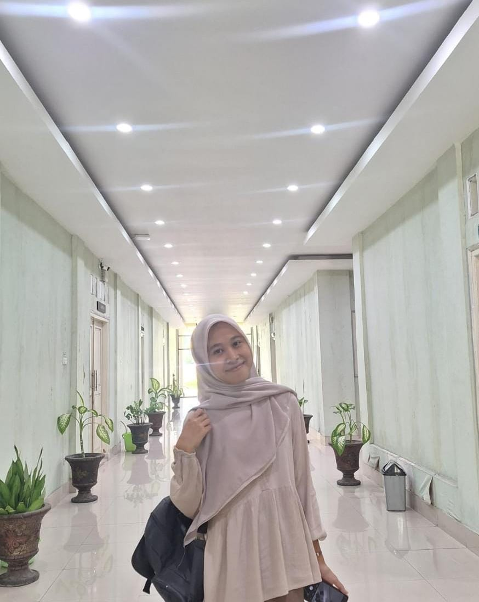
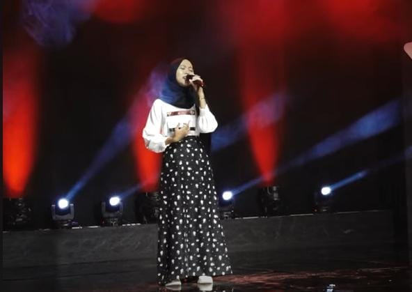
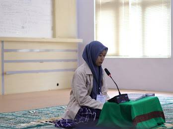
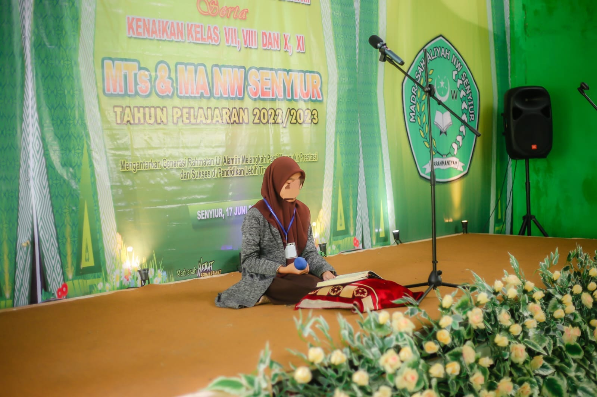

Saya adalah mahasiswa Pendidikan Informatika yang memiliki minat dalam pengembangan web, desain, dan teknologi digital. Saya senang mempelajari hal baru dan terus mengembangkan kemampuan dalam dunia informatika.
Nice To Meet You!! Saya Erni Puspaini, mahasiswi Program Studi Pendidikan Informatika di Universitas Hamzanwadi. Saya memiliki minat yang besar di bidang desain dan pemrograman, khususnya dalam merancang dan mengembangkan antarmuka web yang menarik serta estetik. Saya senang mempelajari hal-hal baru dan mengeksplorasi berbagai ide kreatif untuk menghasilkan karya yang bermanfaat. Di waktu luang, saya menikmati kegiatan bernyanyi dan tilawah . Aktivitas tersebut tidak hanya menjadi hiburan bagi saya, tetapi juga membantu menjaga fokus dan memberikan ketenangan. Saya percaya bahwa perpaduan antara kreativitas dan logika dapat menghasilkan solusi serta proyek yang inovatif, sekaligus membantu saya terus mengembangkan kemampuan di bidang teknologi dan desain.



1. Proyek Web & Desain
Berhasil menyelesaikan beberapa proyek web portofolio pribadi menggunakan
HTML dan CSS,
serta mengembangkan antarmuka yang estetik dan user-friendly. Proyek-proyek ini menunjukkan
kemampuan saya dalam menggabungkan desain visual dan fungsionalitas.
2. Artificial Intelligence Training
Telah menyelesaikan training di bidang Artificial Intelligence, mencakup modul-modul berikut:
1: Artificial Intelligence Fundamentals,
2: Generative AI,
Module 3: Responsible Use of AI,
AI Workshop,
Pelatihan ini membantu saya memahami konsep dasar AI, penggunaan generative AI,
serta pentingnya penggunaan AI secara bertanggung jawab.
2. Hobi & Aktivitas Kreatif
Aktif mengikuti kegiatan bernyanyi dan tilawah, yang tidak hanya meningkatkan kreativitas
tetapi juga membantu menjaga fokus dan disiplin diri. Aktivitas ini menjadi bagian penting
dalam mengembangkan kemampuan diri di luar akademik.